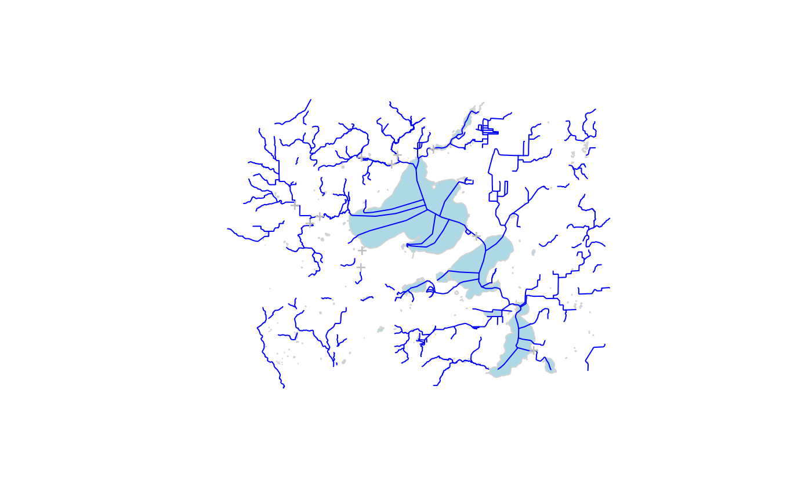

Calls the NHDPlus_HR web service and returns sf data.frames for the selected layers. See https://hydro.nationalmap.gov/arcgis/rest/services/NHDPlus_HR/MapServer for source data documentation.
get_nhdphr(
AOI = NULL,
ids = NULL,
type = NULL,
reachcode = NULL,
t_srs = NULL,
buffer = 0.5,
page_size = 2000
)sf (MULTI)POINT or (MULTI)POLYGON. An 'area of interest' can be provided as either a location (sf POINT) or area (sf POLYGON) in any Spatial Reference System.
character vector of nhdplusid ids
character. Type of feature to return e.g. c("networknhdflowline", nonnetworknhdflowline", nhdwaterbody", "nhdpluscatchment"). If NULL (default) a data.frame of available types is returned
character vector of reachcodes NOTE: performance of this query is currently very poor, spatial queries are the primary use of this function.
character (PROJ string or EPSG code) or numeric (EPSG code). A user specified - target -Spatial Reference System (SRS/CRS) for returned objects. Will default to the CRS of the input AOI if provided, and to 4326 for ID requests.
numeric. The amount (in meters) to buffer a POINT AOI by for an extended search. Default = 0.5
numeric default number of features to request at a time. Reducing may help if 500 errors are experienced.
a simple features (sf) object or valid types if no type supplied
The returned object(s) will have the same
Spatial Reference System (SRS) as the input AOI. If a individual or set of
IDs are used to query, then the default CRS of EPSG:4269 is
preserved. In all cases, a user-defined SRS can be passed to t_srs
which will override all previous SRS (either input or default).
All buffer and distance operations are handled internally using in
EPSG:5070 Albers Equal Area projection
# \donttest{
AOI <- sf::st_as_sfc(sf::st_bbox(c(xmin = -89.56684, ymin = 42.99816,
xmax = -89.24681, ymax = 43.17192),
crs = "+proj=longlat +datum=WGS84 +no_defs"))
# get flowlines and hydrolocations
flowlines <- get_nhdphr(AOI = AOI, type = "networknhdflowline")
#> https://hydro.nationalmap.gov/arcgis/rest/services/NHDPlus_HR/MapServer/3/query
#> {"xmin":-89.5668,"ymin":42.9982,"xmax":-89.2468,"ymax":43.1719,"spatialReference":{"wkid":4326}}NULLjsontrue
#> https://hydro.nationalmap.gov/arcgis/rest/services/NHDPlus_HR/MapServer/3/query
#> 18754,23142,25265,42660,77142,107207,113482,126530,128597,165213,175921,178097,180239,193177,203616,218568,263596,265809,268050,274427,353568,353573,364127,381174,404939,434757,447662,449838,473449,477696,488602,499495,501571,529551,531672,540311,560132,562307,588156,598664,634921,637051,639277,652385,663060,665199,669543,678013,690921,697249,710210,714403,720898,731639,744367,757120,772166,782889,793734,812882,832315,847340,871250,884221,888540,895028,897236,914533,927257,933659,940010,944321,957347,965778,998139,1004578,1011055,1011057,1025870,1060408,1062603,1139886,1183028,1193999,1268940,1273306,1275432,1290532,1312249,1322978,1331620,1342343,1361805,1387623,1396074,1404644,1413191,1534945,1556470,1569420,1571592,1603712,1620743,1624908,1633510,1713227,1717468,1732647,1745390,1766886,1784108,1842495,1846895,1868279,1876897,1889761,1908914,1911080,1917532,1934748,1934749,1934750,1949789,1951926,1971167,1988093,1996651,2022627,2050783,2063943,2068257,2081290,2102670,2104889,2111277,2115594,2132686,2139219,2145588,2163166,2182683,2210813,2215126,2241230,2269211,2277783,2297083,2324860,2340034,2342188,2352794,2374462,2400496,2445468,2453960,2464763,2481793,2484019,2484020,2501189,2537794,2537796,2567812,2570000,2604884,2643603,2658788,2663032,2673815,2688862,2703895,2705986,2727536,2751133,2759792,2791925,2824319,2830688,2835003,2843574,2858734,2867351,2869508,2869512,2888741,2940301,2946805,2955458,2955463,2983714,3011498,3037341,3054328,3060613,3077777,3090735,3114456,3114457,3118630,3140200,3170528,3174843,3185640,3194372,3220213,3224432,3241538,3269473,3280458,3319300,3351403,3372931,3377150,3377165,3437617,3439773,3441969,3448451,3452784,3472331,3500284,3506757,3515422,3528299,3528300,3562449,3571044,3583877,3609813,3625088,3638227,3640372,3661725,3694051,3696189,3713494,3728380,3745662,3771305,3788382,3788383,3811713,3822560,3858893,3861049,3871757,3889020,3906163,3938348,3960005,3972743,3979240,3981325,4037503,4046266,4071909,4091245,4160087,4267705,4269980,4272202,4291617,4325762,4330050,4338729,11978592,12032693,12376071,12472174,12544503,12673916,12730719,12971291,13010394,13165602,13210341,13351853,13616563,13712615,13748554,13964528,13973495,14102233,14222812,14243942,14349467,14379449,14502451,14535301,14565502,14583561,14760744,14778714,14802679,14896207,15163509,15178436,15349776,15514805,15602092,15751974,16130730,16136691,16238321,16238322,16295285,16364431,16451111,16493419,16502423,16658812,16701073,16758358,16869693,16953808,16965957,17237379,17525419,17546817,17576676,17643256,17856540,17859580,17998332,18319992,18500727,18680548,18737273,19061981,19208572,19307743,19416670,19443304,19485488,19530681,19603266,19654277,19729241,19891840,19903943,19985715,20060713,20247766,20256723,20365386,20669334,20873483,20894672,20984515,21201041,21270160,21282192,21297185,21459548,21538184,21541115,21562521,21664327,21784634,21829649,21922663,21973529,21973530,22121080,22145322,22160582,22286722,22419275,22546479,22546481,22588722,22970315,23231530,23303685,23399294,23492969,23537887,23681463,23714982,23775277,23811513,23817685,23856679*geojson
point <- get_nhdphr(AOI = AOI, type = "nhdpoint")
#> https://hydro.nationalmap.gov/arcgis/rest/services/NHDPlus_HR/MapServer/2/query
#> {"xmin":-89.5668,"ymin":42.9982,"xmax":-89.2468,"ymax":43.1719,"spatialReference":{"wkid":4326}}NULLjsontrue
#> https://hydro.nationalmap.gov/arcgis/rest/services/NHDPlus_HR/MapServer/2/query
#> 167085,167087,167088,167089,167090,167091,167092,167093,167094,167095,167117*geojson
waterbody <- get_nhdphr(AOI = AOI, type = "nhdwaterbody")
#> https://hydro.nationalmap.gov/arcgis/rest/services/NHDPlus_HR/MapServer/9/query
#> {"xmin":-89.5668,"ymin":42.9982,"xmax":-89.2468,"ymax":43.1719,"spatialReference":{"wkid":4326}}NULLjsontrue
#> https://hydro.nationalmap.gov/arcgis/rest/services/NHDPlus_HR/MapServer/9/query
#> 6847,16328,61250,125851,235879,290785,345601,345643,391573,400825,400826,446736,455614,455622,510743,565763,611246,620838,620846,620847,620848,675831,721666,721669,776834,785534,840474,895462,895484,941801,1005748,1060603,1060663,1060688,1106003,1106488,1106525,1115135,1115200,1170110,1225641,1225686,1225698,1280622,1326273,1436043,1491895,1655709,1655915,1665396,1711061,1720453,1720467,1766632,1775006,1775530,1821415,1830303,1830338,1830339,1876299,1885130,1885145,1930258,1939836,1939848,1985960,1985984,2049739,2094984,2095419,2104203,2159433,2269973,2325153,2379868,2434589,2489073,2543841,2589841,2589958,2598719,2598742,2699642,2699692,2699703,2754650,2763556,2763617,2817994,2818039,2872908,2872917,2927874,2927875,2982440,3028617,3083284,3092764,3092799,3138213,3147610,3147668,3202277,3257176,3303203,3312111,3357396,3366371,3366726,3421359,3421373,3466794,3476094,3521779,3522452,3531314,3576906,3632697,3641603,3641645,3641654,3687353,3696175,3751154,3751195,3852459,3861335,3916478,4081842,4081854,4136683,4136695,4136697,4182849,4236838,4356997,4402594,4411978,4458057,4521581,4521622,4576327,4631121,4686179,4686227,4741148,4741529,4842426,4851375,4896707,4906136,4906158,4906159,4906175,4952000,4960979,4960981,5007040,5070868,5125505,5125516,5125565,5226773,5235594,5282019,5290805,5336553,5455694,5510238,5510264,5565144,5610147,5610383,5619848,5666099,5674939,5674981,5730210,5785062,5830806,5840235,5895169,5941213,5941669,5996308,6005249,6005491,6005571,6060349,6060360,6060405,6060418,6169842,6215262,6334429,6389059,6608322,6608345,6608373,6663183,6717998,6763688,6764666,6828628,6828675,6883784,6938581,6938620,6938662,6993323*geojson
if(!is.null(waterbody) & !is.null(flowlines) & !is.null(point)) {
plot(sf::st_geometry(waterbody), col = "lightblue", border = "lightgrey")
plot(sf::st_geometry(flowlines), col = "blue", add = TRUE)
plot(sf::st_geometry(point), col = "grey", pch = "+", add = TRUE) }

# given universalreferenceid (reachcodes), can query for them but only
# for hydrolocations. This is useful for looking up mainstem ids.
get_nhdphr(reachcode = "13020101021927", type = "networknhdflowline")
#> https://hydro.nationalmap.gov/arcgis/rest/services/NHDPlus_HR/MapServer/3/query
#> reachcode IN ('13020101021927')jsontrue
#> https://hydro.nationalmap.gov/arcgis/rest/services/NHDPlus_HR/MapServer/3/query
#> 5771627,6595171,9631861,9792975,10484480,10884728,11346945,11803467,15724370,17293782*geojson
#> Simple feature collection with 10 features and 82 fields
#> Geometry type: LINESTRING
#> Dimension: XY
#> Bounding box: xmin: -105.9805 ymin: 36.17496 xmax: -105.9253 ymax: 36.21542
#> Geodetic CRS: WGS 84
#> permanent_identifier fdate resolution gnis_id gnis_name lengthkm
#> 1 120928749 1.502237e+12 2 01385432 Rio Grande 0.12637349
#> 2 120928746 1.502237e+12 2 01385432 Rio Grande 1.77445619
#> 3 120928753 1.502237e+12 2 01385432 Rio Grande 0.10023801
#> 4 120928745 1.502237e+12 2 01385432 Rio Grande 0.64380256
#> 5 120928744 1.502237e+12 2 01385432 Rio Grande 1.96787731
#> 6 120928752 1.502237e+12 2 01385432 Rio Grande 0.09364129
#> 7 120928748 1.502237e+12 2 01385432 Rio Grande 0.35127735
#> 8 120928754 1.502237e+12 2 01385432 Rio Grande 0.86485354
#> 9 120928751 1.502237e+12 2 01385432 Rio Grande 0.07149613
#> 10 120928747 1.502237e+12 2 01385432 Rio Grande 2.12124057
#> reachcode flowdir wbarea_permanent_identifier ftype fcode mainpath
#> 1 13020101021927 1 120932465 558 55800 0
#> 2 13020101021927 1 120932465 558 55800 0
#> 3 13020101021927 1 120932465 558 55800 0
#> 4 13020101021927 1 120932465 558 55800 0
#> 5 13020101021927 1 120932465 558 55800 0
#> 6 13020101021927 1 120932465 558 55800 0
#> 7 13020101021927 1 120932465 558 55800 0
#> 8 13020101021927 1 120932465 558 55800 0
#> 9 13020101021927 1 120932465 558 55800 0
#> 10 13020101021927 1 120932465 558 55800 0
#> innetwork visibilityfilter nhdplusid vpuid streamleve streamorde
#> 1 1 5000000 3.50006e+13 1302 4 8
#> 2 1 5000000 3.50006e+13 1302 4 8
#> 3 1 5000000 3.50006e+13 1302 4 8
#> 4 1 5000000 3.50006e+13 1302 4 8
#> 5 1 5000000 3.50006e+13 1302 4 8
#> 6 1 5000000 3.50006e+13 1302 4 8
#> 7 1 5000000 3.50006e+13 1302 4 8
#> 8 1 5000000 3.50006e+13 1302 4 8
#> 9 1 5000000 3.50006e+13 1302 4 8
#> 10 1 5000000 3.50006e+13 1302 4 8
#> streamcalc fromnode tonode hydroseq levelpathi pathlength
#> 1 8 3.50006e+13 3.50006e+13 3.50006e+13 3.50001e+13 2706.329
#> 2 8 3.50006e+13 3.50006e+13 3.50006e+13 3.50001e+13 2704.203
#> 3 8 3.50006e+13 3.50006e+13 3.50006e+13 3.50001e+13 2699.370
#> 4 8 3.50006e+13 3.50006e+13 3.50006e+13 3.50001e+13 2703.560
#> 5 8 3.50006e+13 3.50006e+13 3.50006e+13 3.50001e+13 2701.592
#> 6 8 3.50006e+13 3.50006e+13 3.50006e+13 3.50001e+13 2706.527
#> 7 8 3.50006e+13 3.50006e+13 3.50006e+13 3.50001e+13 2705.978
#> 8 8 3.50006e+13 3.50006e+13 3.50006e+13 3.50001e+13 2698.505
#> 9 8 3.50006e+13 3.50006e+13 3.50006e+13 3.50001e+13 2706.455
#> 10 8 3.50006e+13 3.50006e+13 3.50006e+13 3.50001e+13 2699.470
#> terminalpa arbolatesu divergence startflag terminalfl uplevelpat
#> 1 3.50001e+13 33149.18 1 0 0 3.50001e+13
#> 2 3.50001e+13 33152.93 0 0 0 3.50001e+13
#> 3 3.50001e+13 33165.89 1 0 0 3.50001e+13
#> 4 3.50001e+13 33158.34 0 0 0 3.50001e+13
#> 5 3.50001e+13 33161.50 0 0 0 3.50001e+13
#> 6 3.50001e+13 33145.15 0 0 0 3.50001e+13
#> 7 3.50001e+13 33150.69 0 0 0 3.50001e+13
#> 8 3.50001e+13 33166.75 1 0 0 3.50001e+13
#> 9 3.50001e+13 33149.05 0 0 0 3.50001e+13
#> 10 3.50001e+13 33165.79 0 0 0 3.50001e+13
#> uphydroseq dnlevel dnlevelpat dnhydroseq dnminorhyd dndraincou frommeas
#> 1 3.50006e+13 4 3.50001e+13 3.50006e+13 0.00000e+00 1 96.38273
#> 2 3.50006e+13 4 3.50001e+13 3.50006e+13 0.00000e+00 1 70.06044
#> 3 3.50006e+13 4 3.50001e+13 3.50006e+13 3.50006e+13 2 10.61793
#> 4 3.50006e+13 4 3.50001e+13 3.50006e+13 0.00000e+00 1 62.06700
#> 5 3.50006e+13 4 3.50001e+13 3.50006e+13 0.00000e+00 1 37.84511
#> 6 3.50006e+13 4 3.50001e+13 3.50006e+13 0.00000e+00 1 98.83942
#> 7 3.50006e+13 4 3.50001e+13 3.50006e+13 0.00000e+00 1 92.04084
#> 8 3.50006e+13 4 3.50001e+13 3.50006e+13 0.00000e+00 1 0.00000
#> 9 3.50006e+13 4 3.50001e+13 3.50006e+13 3.50006e+13 2 97.95167
#> 10 3.50006e+13 4 3.50001e+13 3.50006e+13 3.50006e+13 2 11.85308
#> tomeas rtndiv thinner vpuin vpuout areasqkm totdasqkm divdasqkm
#> 1 97.95167 0 <NA> 0 0 0.01670001 15674.28 14789.65
#> 2 92.04084 1 <NA> 0 0 2.64680001 15678.19 14793.55
#> 3 11.85308 0 <NA> 0 0 0.08019999 15694.47 14809.84
#> 4 70.06044 0 <NA> 0 0 1.28390001 15682.44 14797.80
#> 5 62.06700 0 <NA> 0 0 3.88990000 15687.72 14803.08
#> 6 100.00000 0 <NA> 0 0 0.03410001 15671.63 14787.00
#> 7 96.38273 0 <NA> 0 0 0.08129999 15675.28 14790.65
#> 8 10.61793 0 <NA> 0 0 0.06200002 15694.54 14809.90
#> 9 98.83942 0 <NA> 0 0 0.01359998 15674.26 14789.63
#> 10 37.84511 0 <NA> 0 0 4.35159998 15694.39 14809.76
#> maxelevraw minelevraw maxelevsmo minelevsmo slope slopelenkm elevfixed
#> 1 -9998 177474 177652 177474 0.01408523 0.12637349 <NA>
#> 2 -9998 177019 177269 177051 0.00122855 1.77445619 <NA>
#> 3 -9998 175774 175780 175780 0.00001000 0.10023801 <NA>
#> 4 -9998 176572 177051 176672 0.00588690 0.64380256 <NA>
#> 5 -9998 176567 176672 176590 0.00041669 1.96787731 <NA>
#> 6 -9998 177678 177678 177678 0.00001000 0.09364129 <NA>
#> 7 -9998 177262 177474 177269 0.00583584 0.35127735 <NA>
#> 8 -9998 175728 175780 175780 0.00001000 0.86485354 <NA>
#> 9 -9998 177652 177678 177652 0.00363656 0.07149613 <NA>
#> 10 -9998 175714 176590 175780 0.00381852 2.12124057 <NA>
#> hwtype hwnodesqkm statusflag qama vama qincrama qbma vbma
#> 1 <NA> <NA> A 3714.387 3.536884 0.000243 3714.387 3.536884
#> 2 <NA> <NA> A 3714.445 2.499065 0.039421 3714.445 2.499065
#> 3 <NA> <NA> A 3714.690 1.328012 0.001217 3714.690 1.328012
#> 4 <NA> <NA> A 3714.507 3.118966 0.018690 3714.507 3.118966
#> 5 <NA> <NA> A 3714.584 2.153226 0.056736 3714.584 2.153226
#> 6 <NA> <NA> A 3714.347 1.327770 0.000496 3714.347 1.327770
#> 7 <NA> <NA> A 3714.402 3.114867 0.001184 3714.402 3.114867
#> 8 <NA> <NA> A 3714.691 1.328012 0.000931 3714.691 1.328012
#> 9 <NA> <NA> A 3714.387 2.911523 0.000198 3714.387 2.911523
#> 10 <NA> <NA> A 3714.689 2.932359 0.068250 3714.689 2.932359
#> qincrbma qcma vcma qincrcma qdma vdma qincrdma qema
#> 1 0.000243 3714.387 3.536884 0.00024300 3714.387 3.536884 0.00024300 1711.386
#> 2 0.039421 3714.445 2.499065 0.04207118 3714.445 2.499065 0.04207118 1711.444
#> 3 0.001217 3714.690 1.328012 0.00121700 3714.690 1.328012 0.00121700 1711.690
#> 4 0.018690 3714.507 3.118966 0.04763696 3714.507 3.118966 0.04763696 1711.506
#> 5 0.056736 3714.584 2.153226 0.07050796 3714.584 2.153226 0.07050796 1711.583
#> 6 0.000496 3714.347 1.327770 0.42352419 3714.347 1.327770 0.42352419 1711.347
#> 7 0.001184 3714.402 3.114867 0.01036309 3714.402 3.114867 0.01036309 1711.401
#> 8 0.000931 3714.691 1.328012 0.00093100 3714.691 1.328012 0.00093100 1711.691
#> 9 0.000198 3714.387 2.911523 0.02664062 3714.387 2.911523 0.02664062 1711.386
#> 10 0.068250 3714.689 2.932359 0.09319502 3714.689 2.932359 0.09319502 1711.688
#> vema qincrema qfma qincrfma arqnavma petma qlossma qgadjma
#> 1 3.340468 0.00024300 1711.386 0.00024300 0 0 0 0
#> 2 2.365791 0.04207118 1711.444 0.04207118 0 0 0 0
#> 3 1.265987 0.00121700 1711.690 0.00121700 0 0 0 0
#> 4 2.947984 0.04763696 1711.506 0.04763696 0 0 0 0
#> 5 2.040998 0.07050796 1711.583 0.07050796 0 0 0 0
#> 6 1.265752 0.42352419 1711.347 0.42352419 0 0 0 0
#> 7 2.944127 0.01036309 1711.401 0.01036309 0 0 0 0
#> 8 1.265988 0.00093100 1711.691 0.00093100 0 0 0 0
#> 9 2.753153 0.02664062 1711.386 0.02664062 0 0 0 0
#> 10 2.772740 0.09319502 1711.688 0.09319502 0 0 0 0
#> qgnavma gageadjma avgqadjma gageidma gageqma Shape_Length
#> 1 0 1 0 0 0 157.84395
#> 2 0 1 0 0 0 2212.36438
#> 3 0 1 0 0 0 124.42048
#> 4 0 1 0 0 0 804.11669
#> 5 0 1 0 0 0 2441.27200
#> 6 0 1 0 0 0 116.80600
#> 7 0 1 0 0 0 437.25416
#> 8 0 1 0 0 0 1070.42970
#> 9 0 1 0 0 0 89.30904
#> 10 0 1 0 0 0 2621.91428
#> geometry
#> 1 LINESTRING (-105.9271 36.21...
#> 2 LINESTRING (-105.9317 36.21...
#> 3 LINESTRING (-105.9782 36.18...
#> 4 LINESTRING (-105.9499 36.20...
#> 5 LINESTRING (-105.957 36.209...
#> 6 LINESTRING (-105.9253 36.21...
#> 7 LINESTRING (-105.9285 36.21...
#> 8 LINESTRING (-105.9774 36.18...
#> 9 LINESTRING (-105.9263 36.21...
#> 10 LINESTRING (-105.972 36.197...
# }